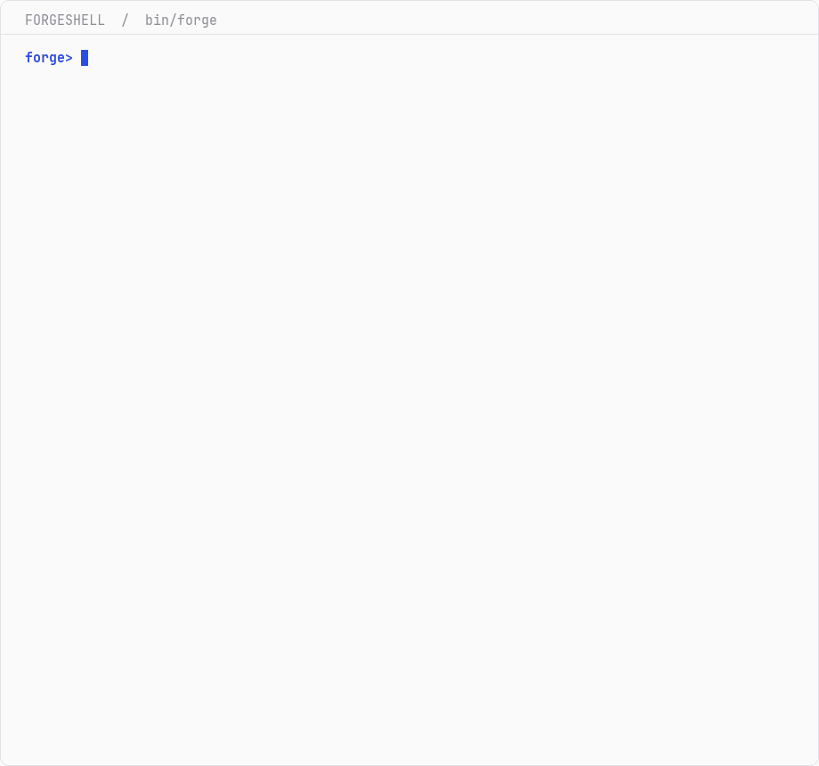

ForgeShell · a field guide
How a Unix shell actually works.
This is a guide to ForgeShell, a small shell written in C for Linux. It's about 1,700 lines of code, and every one of them is explained somewhere on this site.
A shell looks simple from the outside: you type a line and something happens. Underneath, it touches most of the ideas that hold Unix together. Processes are copied and then replaced. Every input and output is a numbered file descriptor. Programs talk through pipes. The terminal decides who is allowed to read the keyboard. And the kernel publishes what it knows about every running process as plain text files.
The chapters below build that picture one piece at a time, with figures you can click through. The Source page walks the code block by block, with a note beside every block. The Questions page is the interview version: short, direct answers to the things people actually ask.
You don't need to be fluent in C. If you know what a function, a struct and a pointer are, the rest is introduced as it comes up. Each chapter ends with one question and a short answer, worth being able to say out loud.
Read it in order the first time. After that, the Questions page plus the "Bugs and gaps" chapter are the fastest way back in.

bin/forge through a pseudo-terminal with tools/record_demo.py. Pipeline, background job, Ctrl+Z, bg, live monitor, then inspect.- 01The loopmain.c
- 02From text to structureparser.c
- 03Making a processfork / exec / wait
- 04File descriptors and redirectionopen / dup2
- 05Pipespipe()
- 06Builtinsbuiltins.c
- 07Signalssignals.c
- 08Job controljobs.c
- 09Reading the kernel: /procproc.c
- 10Build, tests and CIMakefile
- 11Bugs found, gaps lefthonest notes
The loop
A shell is an ordinary program running one loop: read a line, work out what it means, run it, repeat.
There is nothing special about a shell. When you run ./bin/forge, the kernel starts it like any other program: it gets a process ID, some memory, and three open files (keyboard input, screen output, and error output). Everything it does after that, it does by asking the kernel through system calls, the small fixed set of functions such as fork, open and read that a program uses to get the kernel to act for it.
ForgeShell's main() is short enough to hold in your head. Before each prompt it checks on background jobs. Then it prints forge> , blocks until you press Enter, turns the line into a structure, runs that structure, frees it, and goes round again. When input ends (Ctrl+D, or the end of a piped script) it exits with the status of the last command. main.c
Where things live
The code is split by job, and each file maps to one chapter of this guide:
main.c: the loop above.parser.c: text toCommandstructures (chapter 02).executor.c: structures to processes, with pipes and redirects (chapters 03 to 05).builtins.c: commands the shell runs itself (chapter 06).signals.candjobs.c: Ctrl+C, Ctrl+Z,fg,bg(chapters 07 and 08).proc.c:inspect,monitorandps, which read the kernel's/procfiles (chapter 09).
Each .c file has a matching header in include/ that declares what other files may use. Everything else is static, meaning private to its file.
ls and press Enter?The terminal driver hands the line to the shell, which is blocked in getline(). The parser turns it into one command with argv = ["ls", NULL]. It isn't a builtin, so the shell calls fork(). The child puts itself in a new process group, takes the terminal, resets its signals and calls execvp("ls", argv), which searches PATH and replaces the child's program with /usr/bin/ls.
The shell waits with waitpid(). When ls exits, the shell collects its status, takes the terminal back and prints the next prompt.
From text to structure
Before anything can run, a line like sort < in.txt | head -n 2 > out.txt has to become something a program can act on.
The parser works in two passes, the way a compiler does. The lexer reads characters and produces tokens: words, plus the operators |, <, >, >>, 2> and &. The parser then reads tokens and builds structures. Keeping the two apart means quoting rules live in exactly one place.
Why not split on spaces? Because of quotes. echo "a | b" must pass one argument, a | b, to echo, and must not create a pipe. The lexer handles three quoting styles:
- Single quotes keep everything literally until the next
'. No escapes at all. - Double quotes keep spaces and operators, and let
\"and\\through as escapes. Any other backslash is kept, which is whyprintf "a\nb"works. - A backslash outside quotes makes the next character ordinary, so
a\ bis one word.
The output is a JobPipeline: a linked list of Command structures, one per stage, plus a flag for a trailing &. Each command has a NULL-terminated argv array, which is exactly the shape execvp() wants, and up to three redirect file names. parser.h
Two details are worth knowing. Redirect targets aren't arguments: in sort > out.txt -r, sort gets -r and its output goes to the file. And a few corners behave differently from Bash. echo a2>f splits into a and a 2> redirect, because the lexer treats 2> as an operator even in the middle of a word. Chapter 11 lists these.
Every error path frees everything allocated so far: the token list, the half-built pipeline, and every string inside both. The parser tests run under AddressSanitizer in CI, which would catch a leak on any of those paths. parse_pipeline
They solve different problems. The lexer deals with characters: quotes, escapes, where one word ends. The parser deals with grammar: a redirect must be followed by a file name, a pipe can't come first. Splitting them keeps both simple. The parser never sees a quote, and the lexer never needs to know what a pipeline is. It's the same reason compilers are built that way.
Making a process
Unix starts a program in two steps: copy yourself, then let the copy turn into something else.
fork() makes a near-exact copy of the calling process: same code, same variables, same open files. It returns twice, once in each process. The parent gets the child's process ID, and the child gets 0. The copy is cheap because of copy-on-write: the kernel shares the memory pages and only copies a page when one side writes to it.
execvp() replaces the calling process's program with a new one, found by searching PATH. The process ID stays the same, open files stay open, and ignored signals stay ignored. Everything else is gone: code, heap, stack. If exec succeeds, it never returns.
waitpid() lets the parent block until a child changes state, then collect its exit status. Until the parent does that, a finished child stays in the process table as a zombie: no memory, no code, just a PID and a status waiting to be read.
The gap between fork and exec is the whole point. In that gap the child is still running shell code, so it can set itself up: join a process group, take the terminal, reset signals, rewire its file descriptors. Then it becomes sort, and sort starts life already redirected without knowing it. child side
sort < names.txt. Highlighted fields changed in that step.Exit statuses
The status waitpid returns is a packed integer, not the plain exit code. The macros WIFEXITED, WEXITSTATUS, WIFSIGNALED, WTERMSIG and WIFSTOPPED unpack it. On Linux the layout is: exit code in bits 8 to 15, terminating signal in bits 0 to 6, core-dump flag in bit 7, and the special value 0x7f in the low byte for a stopped process.
Shells turn this into one number, which Bash calls $?: the exit code if the process exited, 128 + signal number if a signal killed it. That's why a segfault shows up as 139 and Ctrl+C as 130. Two more values come from the shell itself: 127 when exec can't find the command, and 126 when it found it but couldn't run it. wait_for_job
Because the child needs to run some of the shell's code before it becomes the new program. Between the two calls it sets up its process group, terminal, signals and file descriptors using ordinary system calls, and exec keeps all of that. One combined "spawn" call would need a parameter for every possible piece of setup. Splitting it means any setup you can write in C is available for free.
File descriptors and redirection
A program never writes to "the screen". It writes to file descriptor 1, and the shell decides what 1 is.
Each process has a small table owned by the kernel. A file descriptor is just an index into it: 0, 1, 2, 3 and so on. Each entry points to an open file description in the kernel, which records which file, the current position and the access mode. By convention 0 is standard input, 1 standard output and 2 standard error. The table is copied by fork and kept by exec, which is why redirection works at all.
Three calls do all the work:
open(path, flags, mode)returns the lowest free descriptor pointing at the file.dup2(old, new)makesnewpoint whereoldpoints. Ifnewwas open, it's closed first, in one atomic step.close(fd)removes an entry.
So ls > out.txt is: in the child, open("out.txt", O_WRONLY|O_CREAT|O_TRUNC, 0644) gives fd 3, dup2(3, 1) points stdout at the file, close(3), then exec ls. ls writes to fd 1 as always and never knows. >> swaps O_TRUNC for O_APPEND, which makes every write go to the current end of the file. apply_redirections
fork and exec.A builtin like pwd > where.txt raises a problem: it runs inside the shell, so redirecting its fd 1 would redirect the shell's own output. The fix is to save the real descriptors first with dup(1), which gives a spare descriptor pointing at the terminal. Then redirect, run the builtin, and dup2 the saved copy back. execute_single_builtin
In the child, after fork and before exec: open the file, which gets the lowest free descriptor, say 3. Then dup2(3, 1) so descriptor 1 points at the file, and close 3. The descriptor table survives exec, so the new program writes to fd 1 as usual and the data lands in the file. The program itself doesn't do anything special.
Pipes
A pipe is a small buffer in the kernel with a write end and a read end. The hard part is closing things.
pipe(fds) creates the buffer and returns two descriptors: fds[1] to write, fds[0] to read. On Linux the buffer holds 64 KB by default. A writer blocks when it's full and a reader blocks when it's empty, so the stages of a pipeline run at the same time and pace each other. That's how yes | head -n 30000 | wc -l can push unlimited data through a fixed buffer.
Two rules follow:
- A reader gets end-of-file only when every write end of the pipe is closed, in every process that has one. That includes copies inherited through
fork. - A writer whose readers are all gone gets
SIGPIPE, which kills it by default. That's howyesstops onceheadexits.
ForgeShell builds a pipeline with one loop. For each command except the last, it creates a pipe before forking so the child inherits it. The child wires the previous pipe's read end to stdin and the new pipe's write end to stdout, and closes the rest. The parent closes what it no longer needs and keeps only the newest read end, in prev_pipe_read, for the next command. When the loop ends, the shell holds no pipe descriptors at all. the loop
The test suite checks for leaks directly. After running several pipelines it runs ls -1 /proc/self/fd | wc -l, counting the descriptors a child inherited from the shell. A leaked pipe end would show up in that count. test
A reader only sees end-of-file when every copy of the pipe's write end is closed. If the shell, or a later child that inherited it, still holds a write end, the kernel assumes more data might come, and the reader blocks forever. The shell must close its copies after forking, and each child must close the ends it doesn't use.
Builtins
Some commands can't be separate programs, because their whole job is to change the shell itself.
A process can change its own working directory and environment, never its parent's. If cd were a program, it would run in a child, change the child's directory, and exit, and the shell would be exactly where it was. So cd, export, unset and exit must run inside the shell. So must jobs, fg and bg, because the job table lives in the shell's memory.
ForgeShell runs a builtin in-process only when it's a single foreground command. Inside a pipeline (help | head) or in the background (cd /tmp &) it runs in a forked child like anything else, so cd /tmp & has no lasting effect. That matches Bash. executor fast path
cd /tmp both ways and compare where the shell ends up.export KEY=value calls setenv, which changes the shell's environment. Every child started afterwards gets a copy of it through execvp, which is how exported variables reach programs. ForgeShell has no separate "shell variables": anything you set is in the environment. builtin_export
The current directory is a property of each process, and a child can't change its parent's. A cd program would change its own directory and then exit, leaving the shell where it was. So the shell calls chdir() on itself, and every command it starts afterwards inherits the new directory.
Signals
A signal is the kernel tapping a process on the shoulder. The process can ignore it, take the default action, or run a function.
Signals are small numbered notifications: SIGINT (Ctrl+C), SIGTSTP (Ctrl+Z), SIGCHLD (a child changed state), SIGSEGV (bad memory access) and so on. For each signal a process has a disposition: the default action (usually terminate, sometimes stop or ignore), ignore it, or run a handler function. SIGKILL and SIGSTOP can't be caught or ignored.
A shell needs two different setups:
- The shell itself ignores
SIGINT,SIGQUIT,SIGTSTP,SIGTTINandSIGTTOU, so Ctrl+C and Ctrl+Z never kill or freeze it. signals_init_shell - Every child resets them to the default just before
exec. This step is easy to forget: an ignored signal stays ignored acrossexec, so without the reset,sleep 100would ignore Ctrl+C too. signals_reset_child
What a handler may do
A handler can run between any two instructions of the main program, including halfway through malloc or printf. If the handler then calls malloc or printf itself, their internal state can be corrupted. So handlers may only call async-signal-safe functions, and the usual pattern is to set a volatile sig_atomic_t flag and let the main loop act on it. ForgeShell's SIGCHLD handler does exactly that, and monitor uses the same pattern for Ctrl+C. Reaping children happens in the main loop, at a safe point before each prompt.
The SA_RESTART flag matters as well. Without it, a child finishing while the shell sits in getline() would interrupt the underlying read() with EINTR, and the shell would see a failed read.
Two reasons. First, the terminal sends SIGINT only to its foreground process group, and while sleep runs, that's sleep's group, not the shell's. Second, as a safety net, the shell ignores SIGINT anyway. The child resets SIGINT to the default before exec, so sleep dies the normal way. The shell's waitpid then sees it was killed by signal 2 and records status 130.
Job control
Ctrl+Z, fg and bg are built on three kernel ideas: sessions, process groups, and a terminal that knows who is in front.
A process group is a set of processes that receive signals together, identified by a PGID. Every pipeline is one group, so Ctrl+C stops all of yes | head | wc at once. A session is the set of groups that share one controlling terminal. The terminal has exactly one foreground process group: only that group may read the keyboard, and Ctrl+C, Ctrl+Z and Ctrl+\ are delivered to it.
The shell's job is to move the terminal between groups:
- At startup it puts itself in its own group and takes the terminal with
tcsetpgrp(). - For a foreground job it creates a new group (with
setpgid), hands the terminal to it, and waits withwaitpid(-pgid, ..., WUNTRACED). The negative PID means "any process in that group", andWUNTRACEDmeans "also wake me if one stops". - When the job finishes or stops, the shell takes the terminal back and restores the terminal settings it saved at startup.
fghands the terminal over again and sendsSIGCONTto the group.bgjust sendsSIGCONT.
A background group that tries to read the terminal gets SIGTTIN, which stops it. That's why cat & shows up as Stopped in jobs. put_job_in_foreground
The double setpgid
After fork, both the parent and the child call setpgid(child, pgid). That looks redundant, but it's deliberate. After fork the scheduler can run either process first. If only the child called setpgid and the parent ran first, the parent could call tcsetpgrp(tty, pgid) for a group that doesn't exist yet, and that fails. If only the parent called it, the child might exec before joining the group, and a quick Ctrl+C would miss it. With both calls, whichever runs first creates the group, and the second call is harmless. both calls
setpgid.One more subtle ordering: the child calls tcsetpgrp before resetting its signals. Calling tcsetpgrp from a background group raises SIGTTOU, but at that moment the child still has the shell's "ignore SIGTTOU" setting, so the call succeeds. Swap the two steps and the child could stop itself.
A process group is a set of processes that receive signals as one unit. The shell puts each pipeline in its own group, which lets it do three things: hand the terminal to exactly that pipeline with tcsetpgrp, stop or resume the whole pipeline with one kill(-pgid, sig), and wait for any process in the job with waitpid(-pgid). The terminal then sends Ctrl+C and Ctrl+Z to the foreground group only, so the shell itself isn't affected.
Reading the kernel: /proc
Linux exposes every process as a folder of text files. inspect, monitor and ps just read them.
/proc isn't stored on any disk. It's a virtual filesystem: when you read /proc/1234/status, the kernel builds the text on the spot from its live process tables. So ps is just "list the folders in /proc whose names are numbers", and every number inspect prints is something you could cat yourself. The report names the source next to each value for exactly that reason.
ForgeShell reads six things per process: stat (one line, about 52 fields), status (readable Key: value lines), cmdline, the exe and cwd links, and the entries in fd/. proc_get_info
The parenthesis trap
Field 2 of stat is the program name in parentheses, and the name can contain spaces or a ). Split the line on spaces and every later field shifts. The safe way, used here and by the real ps, is to take the text between the first ( and the last ), then parse the rest.
sscanf reads, and grey ones are skipped. Rename the program to see the trap.CPU percentage
/proc only reports total CPU time since the process started, in clock ticks (utime for its own code, stime for kernel work on its behalf). There are usually 100 ticks per second (sysconf(_SC_CLK_TCK)). Usage right now needs two samples: the change in ticks, divided by ticks per second, divided by the seconds between samples. monitor does exactly that each interval, timing the interval with CLOCK_MONOTONIC so a clock change can't distort it. the formula
VmSize and VmRSS
VmSize is all the address space a process has reserved. VmRSS (resident set size) is how much of it is actually in RAM. They differ because Linux allocates lazily: malloc of 300 MB only reserves addresses, and real memory is attached one 4 KB page at a time, on the first write to each page (a page fault). The leak demo program writes one byte per page to make all of it resident.
That demo program also contained a bug, found while recording the demo on the front page. It used to malloc, memset and free a buffer it never read. Under -O2 the compiler is allowed to delete all three, because nothing can observe them, so inspect showed 2 MB instead of 300. Making the pointer volatile forces the writes to happen. leak.c
VmSize is the virtual address space the process has reserved. VmRSS is the part actually backed by physical RAM right now. Linux only attaches a physical page when the process first touches it, so a big malloc raises VmSize straight away but VmRSS only as pages are written. RSS can also go down when pages are swapped out.
Build, tests and CI
Two levels of tests, four build variants, and a check that keeps this guide in step with the code.
The build. make compiles every file in src/ with -Wall -Wextra -Wpedantic -std=c11 -O2. The compiler also writes a dependency file for each source (-MMD -MP), so editing a header rebuilds every file that includes it. make debug builds without optimization and with full debug info. make asan adds AddressSanitizer and UndefinedBehaviorSanitizer, which catch out-of-bounds access, use-after-free, leaks and undefined behaviour while the tests run. Makefile
Unit tests (tests/test_parser.c) link the parser on its own and check its output structures directly with assert. Integration tests (tests/test_runner.py) start the real bin/forge, pipe a script into it, and check output, exit codes and files: 26 tests across execution, quoting, redirection, pipes, builtins, jobs and /proc.
Because the integration tests feed the shell through a pipe, it runs non-interactively: no terminal, so no terminal hand-off and no Ctrl+Z. Those paths are exercised by the demo recorder instead, which drives the shell through a real pseudo-terminal. Turning that into automated tests would be the next step.
CI runs on every push: gcc and clang, each in a release build and a sanitizer build, all running the full suite. A separate job rebuilds this site's annotated source data and fails if it's out of date. The notes are tied to the code by text anchors, so if a function changes and its note no longer matches, CI goes red. ci.yml
At two levels. Unit tests check the parser's data structures directly in C. Integration tests run the real binary with scripted input and check stdout, stderr, exit codes and the files it creates. That covers things like 127 for a missing command, 139 for a segfault, 30,000 lines through a pipeline without deadlock, and no leaked descriptors, checked through /proc/self/fd. CI runs everything under gcc and clang, with and without AddressSanitizer and UBSan.
Bugs found, gaps left
What broke while making this guide, how each fix works, and what still behaves differently from Bash.
Recording the demo and writing these notes meant running the shell in situations the test suite didn't cover: as a session leader, with a real terminal, and with odd input. Six bugs turned up. Each one is fixed, and the ones that can be tested without a terminal now have tests.
- fixed
Startup error as a session leader. Started directly by a terminal emulator, the shell printed
setpgid: Operation not permitted. A session leader already leads its group, and POSIX forbidssetpgidon it. Now it only callssetpgidwhen it isn't already the group leader. - fixed
Job numbers skipped. Every foreground command used up a job number, so the first background job after
lswas[2]. IDs are now "highest in use + 1", as in Bash. Test: "Job numbering starts at [1]". - fixed
"Stopped" printed twice. After Ctrl+Z,
wait_for_jobprinted the notice and the before-prompt check printed it again. The job is now marked as already reported. - fixed
Demo program optimized away.
leak's allocation was deleted by-O2, since it was never read. Now it writes through avolatilepointer. - fixed
Empty pipeline stage crashed.
ls | > out.txtparsed, and the child then calledexecvp(NULL)and segfaulted. Every stage must now have a command. Test intest_parser.c. - fixed
Pipeline exit status. The status came from whichever process was reaped last, so
sleep 1 | falsereported success. It now comes from the last command, as in Bash. Test: "Pipeline exit status (last command)".
Known differences and rough edges
- lexer
echo a2>fis read asecho aplus2> f, because2>is treated as an operator anywhere in a word. The fix is to recognise it only at the start of a word. - syntax
No
;,&&,||,$VAR,$?, globbing (*.c),2>&1,2>>, heredocs, orcd ~/dir. A line holding only a redirect (> f) does nothing, where Bash would create the file. - jobs
exitdoesn't warn about stopped jobs. Each job has a slot for its own terminal settings (tmodes), but it's never used, so a full-screen program brought back withfgdoesn't get its terminal mode restored. - errors
If
pipe()fails halfway through a pipeline, children already started are left running and stay in the job table. - signals
The
SIGCHLDhandler sets a flag nothing reads. That's harmless, because reaping happens before each prompt, but a finished background job is only reported when you next press Enter. - tests
"Monitor termination handling" never actually runs
monitor. Interactive job control (Ctrl+Z, terminal hand-off) has no automated tests. Both would need a pseudo-terminal harness like the demo recorder. - report
inspectlabels the process state as coming fromstatus, but it's parsed fromstat. The value is the same.
What to build next
In the order I'd tackle them: a pseudo-terminal test harness for interactive job control, $? and $VAR expansion, ; && || (which needs a real grammar, a list of pipelines joined by operators), 2>&1, globbing through glob(), and line editing with history, which means putting the terminal into raw mode.